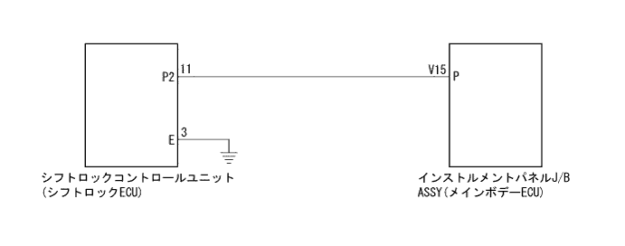
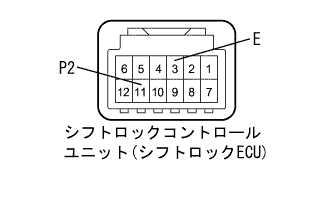
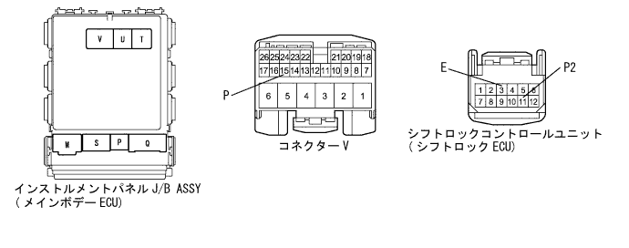

DTC B2281 P Signal Malfunction |
| DTC No. | DTC Detection Condition | Inspection Area |
|---|---|---|
| B2281 |
|
|

| Step 1 | Read TaSCAN Data |
ECU Data Monitor
Using SST (TaSCAN), perform data monitor of the instrument panel J/B assembly (main body ECU).
| Item | Condition | Reference Value |
|---|---|---|
| Shift P Signal | P position / Other than P position | ON / OFF |
|
| ||||
| OK | ||
| ||
| Step 2 | Inspect Shift Lock Control Unit Assembly |
 |
Resistance Inspection
Disconnect the shift lock control unit (shift lock ECU) connector.
Using SST (Toyota electrical tester), inspect the resistance between the connector terminals.
| Tester Connection | Condition | Standard |
|---|---|---|
| 11(P2) - 3(E) | P position | 10k Ω or higher |
| 11(P2) - 3(E) | Other than P position | Below 1 Ω |
|
| ||||
| OK | |
| Step 3 | Inspect Wire Harness (Instrument Panel J/B Assembly (Main Body ECU) - Shift Lock Control Unit (Shift Lock ECU)) |
Resistance Inspection

Disconnect connector V of the instrument panel J/B assembly (main body ECU).
Using SST (Toyota electrical tester), inspect the resistance between the terminals of the vehicle side wire harness connector.
| Inspection terminal (main body ECU - shift lock ECU) | Condition | Standard |
|---|---|---|
| V15(P) - 11(P2) | Always | Below 1 Ω |
Using SST (Toyota electrical tester), inspect the resistance between each terminal of the vehicle side wire harness connector and body ground.
| Inspection terminal (main body ECU or shift lock ECU - body ground) | Condition | Standard |
|---|---|---|
| V15 (P) or 11 (P2) - Body ground | Always | 10k Ω or higher |
| Inspection terminal (shift lock ECU - body ground) | Condition | Standard |
|---|---|---|
| 3 (E) - Body ground | Always | Below 1 Ω |
|
| ||||
| OK | ||
| ||